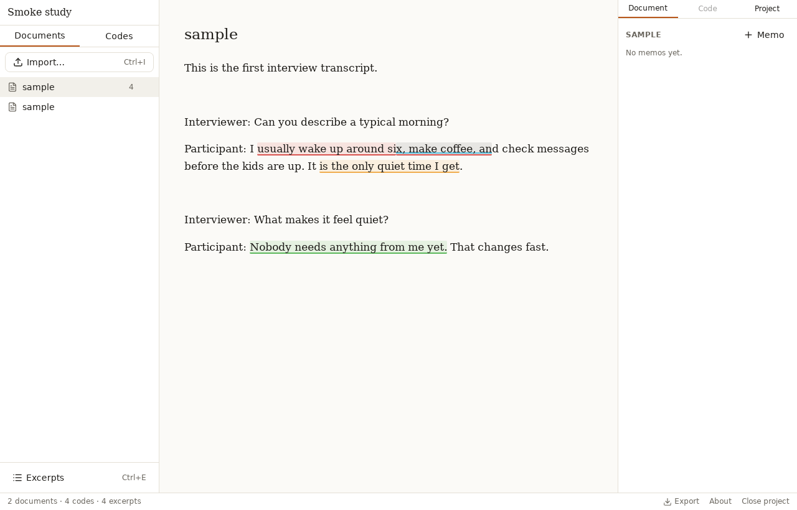
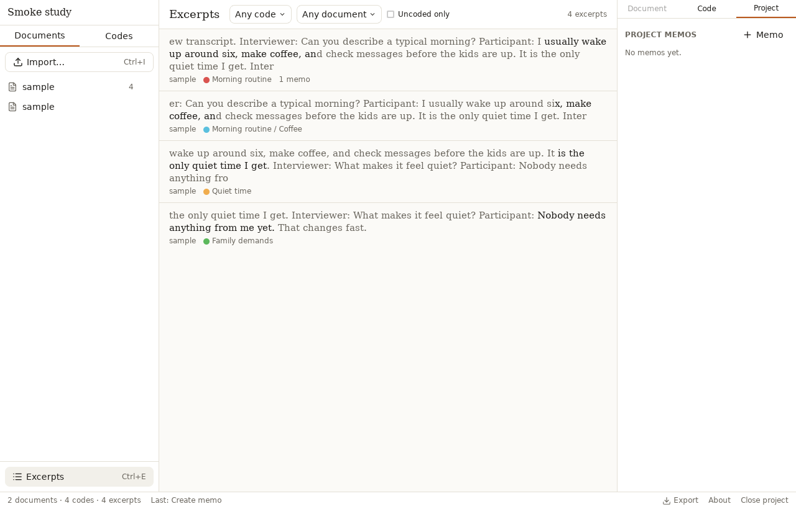

Qualitative coding, on your own machine
Misket is a free, open-source desktop app for coding text documents, images, audio and video. Your project is a single file on your disk — nothing is ever uploaded.
Free & MIT-licensed · macOS, Windows and Linux · no account, no subscription
Keyboard-first coding
Select text and press Ctrl/⌘+K to code it, or hit a code's own hotkey. Overlapping excerpts are drawn as stacked lanes so you can see every code that touches a passage at once.
A real codebook
Nested codes with colors, descriptions and shortcuts; merge, delete with an impact preview, and move excerpts from one code to another without losing either code.
Transcribe on your own machine
An interview goes in, a timestamped transcript comes out, with Whisper running locally — no account, no upload, no per-minute bill. Click a line to seek the recording.
Built-in analysis
Code frequency tables, a co-occurrence matrix and a code-by-document heatmap, every cell clicking through to the matching excerpts and exporting to CSV.


Why Misket
Misket is an alternative to tools like Dedoose for researchers who want a modern,
keyboard-friendly interface without a subscription. It does what a first qualitative
coding pass needs: import your documents, build a codebook, code the text, browse and
filter what you have coded, and export it — all stored in one .misket
file that never leaves your computer.
Milestone 1 covers text: import plain text, Markdown, Word and PDF documents; a nested codebook with hotkeys; coding with overlapping excerpts; boundary adjustment; an excerpt browser with filters; descriptors (document attributes); memos; analysis views; undo/redo for every action; and CSV/JSON export. Milestone 2 adds media: rectangle regions on images, and time ranges on audio and video with a waveform timeline — recordings stay on disk rather than bloating the project file. Transcript alignment is next on the roadmap.